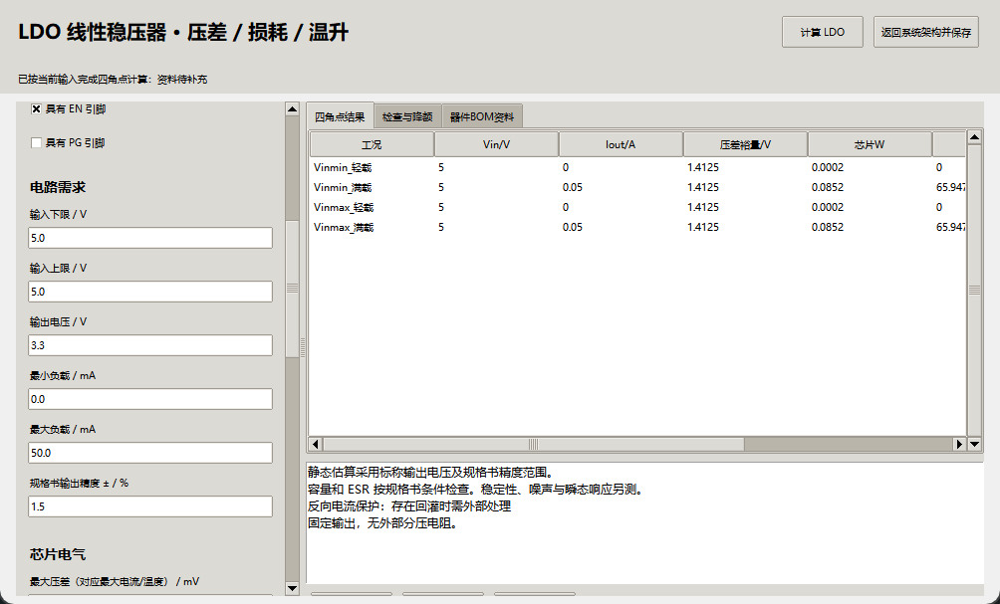

03 核算 LDO 压差 损耗和结温
LDO 采用正电压、共地、单路输出的静态模型。用输入下限和上限分别配轻载与满载，计算四个角点的稳压余量、芯片耗散和结温。
系统画布 → 增加 LDO → 连接上游与负载 → 双击 LDO。
操作步骤
- 建立输入范围 保持“跟随上游输入范围”时，重开单元会同步已连接的上游，包含 OR 二极管后的压降。需固定设计边界时取消勾选，再填写输入下限和上限。
- 填写器件和稳压要求 选固定或可调输出，填写电压、轻载、满载及数据手册条件。未知的推荐范围、额定输出电流与电容要求留空。可调型填基准电压和上分压电阻，软件求下分压电阻。
- 设置散热和外围 按实际环境温度、PCB 条件填写有效结至环境热阻，实际条件核对完成后再勾选相应选项。输入电容、输出电容和 ESR 按工作条件的有效数值填写。
- 计算并回存 点“计算 LDO”。在“检查与降额”核对压差、额定值和结温，在“器件BOM资料”补齐器件身份与电容耐压等资料。使用底部按钮导出，或点“返回系统架构并保存”。

左侧滚动填写器件条件，右侧对照压差裕量、芯片功耗与结温。资料状态在检查页查看。
输入字段
| 字段或选项 | 单位或取值 | 输入的含义及用途 |
|---|---|---|
| 输入下限 / 上限，输出电压 | V | 输入取 LDO 端子处实际电压。输出为标称稳压设定值。 |
| 最小 / 最大负载，输出精度 | mA、% | 轻载与满载电流。输出精度上限参与最低输入电压的稳压余量检查。 |
| 最大压差，最大接地静态电流 Iq | mV、µA | 压差取所用负载及温度下的最坏条件。Iq 为芯片到地电流，参与输入电流和功耗计算。 |
| 推荐工作输入上下限，额定输出电流 | V、mA | 用于规格校核。可调型额定电流检查包含外部分压电流。 |
| 最高环境温度，有效结至环境热阻，设计结温上限 | °C、K/W、°C | 用板级有效热阻估算芯片温升，与指定的设计结温上限对照。 |
| 输入和输出电容，输出 ESR | µF、mΩ | 填写有效容量及串联电阻。对照手册给出的最小容量或 ESR 区间。 |
| 可调型基准电压、上分压电阻 R1 | V、kΩ | 决定下分压电阻和分压电流。固定输出时该组隐藏。 |
| EN、PG、反向电流保护 | 选项 | 记录芯片的使能、输出就绪和反灌保护能力。实际引脚条件查所选器件资料。 |
结果核对
低输入满载先看压差裕量。小于零表示当前角点无法维持设定电压，表中对应的结温和效率为未定义。
高输入满载通常值得重点检查芯片功耗与结温。热阻或额定资料待补时，结论保留待复核。
外围检查只比较所填的规格边界。设计需要验证噪声、PSRR、瞬态或反灌时，使用针对所选器件的验证方法。